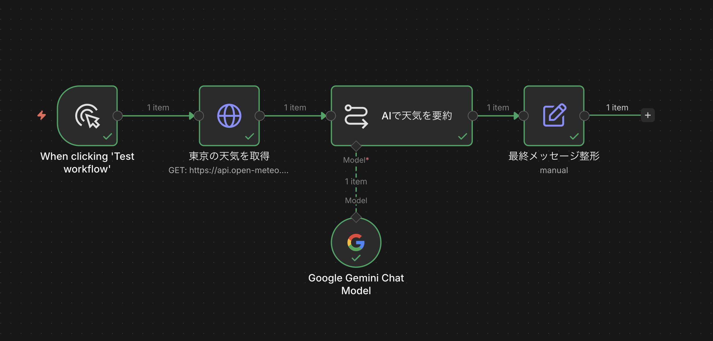
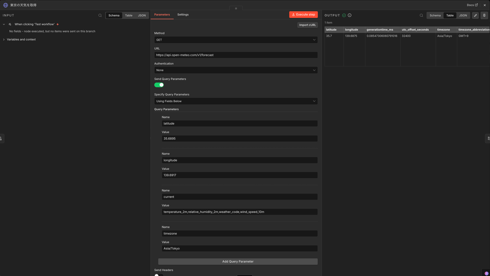

実習課題：外部APIとAIを組み合わせた情報収集＋要約フローを作ろう
目的
セクション3では、外部サービスに接続する部分をSetノードで擬似化して動かしました。セクション4では、いよいよ本物の外部APIと通信するフローを作ります。
この課題の目的は3つあります。
- HTTP Requestノードで本物のAPIを叩き、実データを取得すること
- n8nのCredentials機能でAPIキーを安全に管理すること（ハードコード禁止）
- 取得したデータをAI（Gemini／OpenAI）で処理し、人が読める結果に変換すること
小さくても、「外部の世界からデータを取ってきて・AIで加工して・出力する」というAIエージェントの基本構造を1周体験するのがゴールです。
課題
以下の要素をすべて含むn8nワークフローを作成し、実行成功まで持っていってください。
- 起動トリガー：Manual Trigger（Schedule Triggerも可）
- 外部API呼び出し：HTTP Requestノードで実APIを1回以上叩く
- AI処理：Gemini または OpenAI ノードでデータを要約／整形／判定など
- 認証管理：APIキーはn8nのCredentials機能に保存し、HTTP Requestノードから参照する（URL・Headerに直書きNG）
- 実行成功：ワークフローを実行してすべてのノードが緑のチェックで表示されること
代替オプション：Webhook受信型でもOK
「外から情報を取りに行く」のではなく、「外から情報を受け取る」パターン（Webhook）で作ってもOKです。その場合、Webhookノードで受けて → AIで処理 → 結果を返す／保存する、という構成になります。Webhookのテストは n8n のWebhookノードが発行するTest URLにcurlやSlackのOutgoing Webhookから送信して動作確認します。
成果物
- 使用したAPIの説明 ── 何のAPIを使い、何が取れるのか（3〜5行／テキスト）
- 使用したCredentials名とタイプ ── 例：「OpenWeather_MyKey（HTTP Header Auth）」「Gemini_MyKey（Google Gemini API）」のようにテキストで列挙（※キーの値は絶対に書かない）
- 出力結果の例 ── AIが最終的に出した文章やデータ（1つ分／テキスト）
- 実行成功時のワークフロー画面スクリーンショット ── HTTP Request・AI・配信先などすべてのノードが緑色のチェックで表示されている状態の1画像（=外部APIに実通信して正常実行されたことがわかる）
- 振り返り ── 3〜5行（S3の擬似フローと比べて何が違ったか／どこで詰まったか）
スクリーンショットの注意
スクショを撮る前に、APIキーが画面に映り込んでいないか必ず確認してください。ノードのパラメータ画面を開いたまま撮ると、HTTP Requestのヘッダーなどにキーが見えてしまうことがあります。キャンバス全体（各ノードの詳細パネルが閉じた状態）での撮影が安全です。
手順
ステップ① 使うAPIを決める
以下から1つ選ぶのがおすすめです。無料かつ登録がシンプルなものを選んでいます。業務に関連するAPIが他にあればそれでもOK。
推奨API（APIキーあり）
キーなしで動くAPI（簡単優先）
重要：キーなしAPIを選ぶ場合
「認証管理」の採点要素を満たすため、AIノード（Gemini / OpenAI）のAPIキーは必ずCredentialsで管理してください。直接プロンプトやURLに書き込むのは絶対NGです。
📘 サンプルワークフロー：Open-Meteoで東京の天気を取得
APIキー取得が初心者には壁になりやすいので、登録不要で動かせる Open-Meteo をベースにしたサンプルワークフローを紹介します。このままなぞれば動きますし、緯度経度や項目を変えて応用もできます。
Open-Meteoを初心者におすすめする3つの理由：
- 登録・APIキー発行が完全に不要で、URLを叩くだけでいきなり動かせる
- レスポンスがシンプルなJSONで構造が追いやすい
- 緯度経度を変えれば世界中の天気が取れるので応用が効く
このワークフローの概要：
Open-Meteo APIで東京の現在の気象データを取得し、Geminiに渡して日本語で天気と服装アドバイスを要約させるワークフローです。今回は東京（緯度35.6895, 経度139.6917）の現在の気温・湿度・風速・WMO天気コードを取得する設定にしています。

ワークフロー全体：Manual Trigger → 東京の天気を取得（HTTP Request）→ AIで天気を要約（Google Gemini Chat Model 付きのAIノード）→ 最終メッセージ整形（Edit Fields）
HTTP Requestノードの設定例：

HTTP Requestノードのパラメータ設定（左）と、実際に取得したOutput（右）
設定値の内訳：
- Method：
GET
- URL：
https://api.open-meteo.com/v1/forecast
- Authentication：
None（Open-Meteoはキー不要）
- Send Query Parameters：ON（オン）
- Query Parameters（4つ追加）：
latitude：35.6895（東京の緯度）longitude：139.6917（東京の経度）current：temperature_2m,relative_humidity_2m,weather_code,wind_speed_10m（取得する気象項目）timezone：Asia/Tokyo
取得できるOutputの例：上の図の右側のように、現在時刻の緯度・経度・気温・湿度・天気コード・風速などがJSON形式で返ってきます。この結果を次のAIノードに渡して、「晴れ／気温18度なので薄手のジャケットがおすすめです」のような日本語の要約文に変換するのが後段の処理です。
応用のヒント：緯度経度を変えれば他の都市に変更できます（例：ニューヨーク 40.7128, -74.0060／大阪 34.6937, 135.5023）。current に指定する項目を変えれば取得データの内容も調整できます（公式ドキュメント参照）。
ステップ② APIキーを取得する（該当する場合のみ）
上記の推奨APIを使う場合、公式サイトでアカウント登録してAPIキーを発行します。キーは画面に1度だけ表示されることが多いので、安全な場所（パスワードマネージャーなど）にコピーして保管してください。
ステップ③ n8nのCredentialsにキーを登録する
- n8n左サイドバーから「Credentials」を開く
- 画面右上の新規作成ボタン（「+」や「Create Credential」など）をクリック
- 使うAPIに対応するクレデンシャルタイプを検索（例：OpenAI API、Google Gemini(PaLM) API、HTTP Header Auth、HTTP Query Auth など）
- APIキーを入力し、分かりやすい名前を付けて保存
セキュリティ注意
- APIキーをHTTP RequestノードのURL・Header・Body に直書きしない（必ずCredentials経由で参照）
- キーを誤って公開リポジトリやSlack公開チャンネルに貼らない（漏洩時は即Revokeして再発行）
- 従量課金系APIの場合は利用上限を設定（OpenAIなら Settings → Billing → Usage limits）
- 提出テンプレートにCredentials名を書くときもキーの値は一切書かない（名前とタイプのみ）
ステップ④ ワークフローを組む
基本構成の例（HTTP Request型）：
- Manual Trigger（または Schedule Trigger）
- HTTP Request：ステップ①で選んだAPIを叩く。認証は下記の手順でCredentialsから参照する（URL・Headerに直書きしない）
- AI（Gemini / OpenAI）：取得したデータを要約／整形／判定させる（プロンプトは日本語でOK）。AIノードも同様にCredentialsを参照する
- Set（Edit Fields）または出力ノード：最終メッセージを整形（Slackやメール送信は任意）
HTTP RequestノードでCredentialsを参照する手順
- HTTP Requestノードを開く
- 「Authentication」で認証方式を選択：
- APIに専用のCredentialsタイプがある場合（例：OpenWeatherMap など）：「Predefined Credential Type」→ Credential Type を選ぶ
- 汎用APIキーの場合：「Generic Credential Type」→ さらに「HTTP Header Auth」または「HTTP Query Auth」など、APIが要求する形式を選ぶ
- 「Credential for ...」欄で、ステップ③で作成したCredentialsを選択する
- URL・Header・Body欄にはキーを直接書かない（Credentials側で管理される）
ヒント：AIに骨組みを書かせて良い
セクション3で学んだ通り、「このAPIから取得してAIで要約するn8nフローのJSONを書いて」とChatGPT/Geminiに依頼すると骨組みが手に入ります。インポートしてから、Credentialsを繋ぐ作業だけ手で行うと早いです。
ステップ⑤ 実行して「Success」にする
- キャンバス下部中央の「Execute workflow」ボタンをクリック
- HTTP Requestノードをクリックして「Output」タブで実際に取得したAPIデータが見えることを確認
- AIノードのOutputで要約結果が出ていることを確認
- すべてのノードが緑のチェックになっていることを確認し、スクリーンショットを撮影（撮影前にノードの詳細パネルを閉じ、APIキーが映らないように注意）
提出物
以下のテンプレートに内容を入れて提出してください。
■ ワークフロー名：（ここに記入）
■ 使用したAPI：
API名：（例：OpenWeatherMap）
何が取れるのか：（例：指定した都市の現在の天気と気温）
認証方式：（例：APIキー）
■ 使用したCredentials一覧：
（名前とタイプのみ列挙。例：
・OpenWeather_MyKey（HTTP Header Auth）
・Gemini_MyKey（Google Gemini(PaLM) API）
※APIキーの値は絶対に書かない）
---
■ 出力結果の例：
（AIが最終的に出した文章やデータを1つ貼り付け）
---
■ 実行成功時のワークフロー画面スクリーンショット：
（HTTP Request・AI・配信などすべてのノードが緑色のチェックで
表示されている状態。赤いエラー表示が出ておらず、詳細パネルが
閉じていてAPIキーが映っていないもの）
---
■ 振り返り（3〜5行）：
（例：S3では擬似データだったので「動いたフリ」だったが、今回は
本当に外の天気情報が取れてAIが日本語の朝礼文にまとめてくれたのが
感動的だった。Credentials機能でキーを別管理できるのが想像以上に便利。）